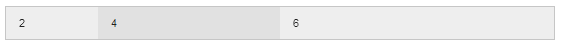
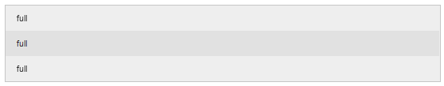

"Where things start make sense..."
<img data-interchange="
[image_path, (media query)],
[image_path, (media query)]"><img data-interchange="
[image_path, (media query)], [image_path, (media query)]">| Name | Media Query |
|---|---|
| default | only screen and (min-width: 1px) |
| small | only screen and (min-width: 1px) |
| medium | only screen and (min-width: 641px) |
| large | only screen and (min-width: 1024px) |
| landscape | only screen and (orientation: landscape) |
| portrait | only screen and (orientation: portrait) |
| retina | only screen and (min-device-pixel-ratio: 2),
|
<img data-interchange="
[image_path, (media query)], [image_path, (media query)]">Write interchange that swaps image1.jpg with image2.jpg when it is at large
| Name | Media Query |
|---|---|
| default | only screen and (min-width: 1px) |
| small | only screen and (min-width: 1px) |
| medium | only screen and (min-width: 641px) |
| large | only screen and (min-width: 1024px) |
| landscape | only screen and (orientation: landscape) |
| portrait | only screen and (orientation: portrait) |
| retina | only screen and (min-device-pixel-ratio: 2),
|
<img data-interchange="
[image1.jpg, (default)], [image2.jpg, (large)]">image1-2x.jpg
<img data-interchange="
[image1.jpg, (default)],
[image2.jpg, (large)],
[image1-2x.jpg, (retina)]">other.jpg at screen and min-width 1px
<img data-interchange="
[image1.jpg, (default)],
[image2.jpg, (large)],
[image1-2x.jpg, (retina),
[other.jpg, (only screen and (min-width: 1px))]">big.jpg min-width 1280px
<img data-interchange="
[image1.jpg, (default)],
[image2.jpg, (large)],
[image1-2x.jpg, (retina),
[other.jpg, (only screen and (min-width: 1px))]
[big.jpg, ((min-width: 1280px))]">See the double parenthesis? Excluding only screen makes it look like that.
<img data-interchange="
[image1.jpg, (default)],
[image2.jpg, (large)],
[image1-2x.jpg, (retina),
[other.jpg, (only screen and (min-width: 1px))]
[big.jpg, ((min-width: 1280px))]">If breaking up the rules on new lines, each line must be a complete rule.
<img data-interchange="
[image1.jpg, (default)],
[image2.jpg, (large)],
[image1-2x.jpg, (retina),
[other.jpg, (only screen and (min-width: 1px))]
[big.jpg, ((min-width: 1280px))]">$(document).foundation('interchange', {
named_queries : {
myMq : '(max-width: 200px)'
}
});<div data-interchange="
[../examples/interchange/default.html, (small)],
[../examples/interchange/medium.html, (medium)],
[../examples/interchange/large.html, (large)]">
<div data-alert class="alert-box secondary radius">
This is the default content.
<a href="#" class="close">×</a>
</div>
</div><div class="row">
<div class="small-2 columns">2 columns</div>
<div class="small-10 columns">10 columns</div>
</div>
<div class="row">
<div class="small-2 columns">...</div>
<div class="small-4 columns">...</div>
<div class="small-6 columns">...</div>
</div>
<div class="row">
<div class="large-2 columns">2 columns</div>
<div class="large-4 columns">4 columns</div>
<div class="large-6 columns">4 columns</div>
</div>small = 12 implied when no small class is given
Encapsulated by .row
Each column needs .column or .columns
small-x (small-12 is implied if you don't specify)
medium-x (medium-12 is implied if you don't specify small)
large-x
show/hide
class="show-for-small-only"
class="show-for-medium-up"
class="show-for-medium-only"
class="show-for-large-up"
class="show-for-large-only"
class="show-for-xlarge-up"
class="show-for-xlarge-only"
class="show-for-xxlarge-up"
class="show-for-touch"Lots of options!
IE
<!DOCTYPE html>
<!--[if IE 7]> <html class="no-js lt-ie9 lt-ie8"> <![endif]-->
<!--[if IE 8]> <html class="no-js lt-ie9"> <![endif]-->
<!--[if gt IE 8]><!--> <html class="no-js"> <!--<![endif]-->Adds classes to the html element that you can target for features
borderradius, boxshadow
How should you progressively enhance .foo for browsers without these features?
.foo {
border-radius: 10px;
box-shadow: 3px 3px #333;
}elem[att^="val"] {} //– the "begins with" selector
elem[att$="val"] {} //– the "ends with" selector
elem[att*="val"] {} //– the "contains" selector^ (begin) | $ (ends) | * (contains)
a[href^="http"] {}^ (begin) | $ (ends) | * (contains)
a[title*="foo"] {}a[title$="heisenberg"] {}Using SASS nesting
a {
color: blue;
&:hover {
cursor: pointer;
}
}elem {
&:before {
background-color: red;
}
&:before {
background-color: purple;
}
}::before & ::after if you are IE9+
elem {
&:before {
content: "";
background-color: red;
}
}>>>
a {
&:before {
content: ">>>";
}
}Scalable Vector Graphics
image.svg
<img src="image.svg">http://jpillora.com/base64-encoder/
li {
background:
url()
no-repeat
left center;
padding: 5px 0 5px 25px;
}Can get HUGE, FAST!
Tend to be very slow on mobile devices
Official CSS Spec:
background: linear-gradient(top, #333333, #00cc0)Vendor Prefixes FTL
background: -webkit-gradient(linear, left top, left bottom, from(#333333), to(#00cc00));
background: -webkit-linear-gradient(top, #333333, #00cc00);
background: linear-gradient(top, #333333, #00cc00);Luckily you don't have to worry about them much anymore, they have been abstracted away from typical developement in the recent years.
Compass / Auto Prefixer do this for you now.
We're going to focus on Compass today
background: linear-gradient(top, #333, #000);background: @include linear-gradient(top left, #333, #0c0);@include background(linear-gradient(top left, #333, #0c0)); ★@include background(image-url("foo.png"),
linear-gradient(top left, #333, #0c0)); ★background: url(foo.png),
linear-gradient(top, #333333, #00cc00);So pull them in using @include's
Click Reference
"examples" are your friends.
Click HTML (may need to refresh page after enabling)
Your first two lines of a sass file should be:
@charset "UTF-8";
@import "compass";background-image: url(foo.png);Compass images
@include background(image-url("foo.png"),
linear-gradient(top left, #000, #fff));@include text-shadow(3px);
@include box-shadow(5px);@include link-colors($normal, $hover, $active, $visited, $focus);@include box-sizing(border-box);@include font-face("Name", font-files("name.ttf", "name.woff"));Buuuuuut....
For "Bullet-Proof" we use Nicole Sullivan's technique
You can also use Zurb's Icon fonts
Create a button with a Star icon to the left of it
<button><i class="fi-star"></i> Star</button>@include opacity(50);Only need this for providing Old IE opacity, if not just use "opacity: .5;"
Opacity affects HEX colors and whatever they contain
rgba(255, 255, 255, 0.5);Give a div #bada55 background color with 70% opacity
background: rgba(186, 218, 85, 0.7);???background: rgba(#bada55, 0.7);